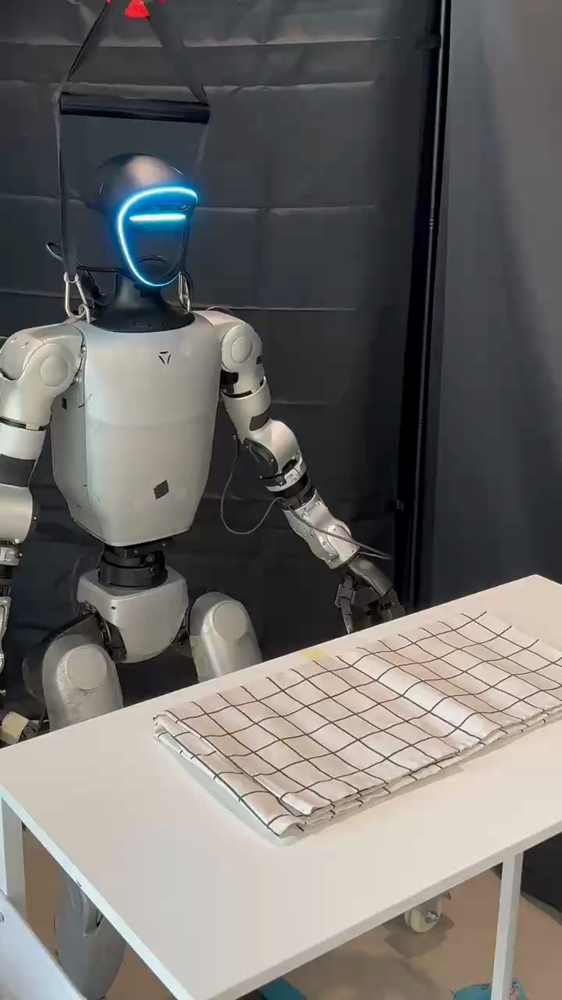

Humanoid Everyday · deformable-2__fold_towel
Fold towel

Annotation
From the dedicated visual review of this video (humanoid_action_v1). Plain text · JSON
Observed outcome
Terminal state
One extra half fold is complete: a smaller layered checkered towel stack rests on the tabletop, with the upper fold slightly offset from the underlying layers. The anatomical left hand has released the fabric and lowered clear; no subsequent manipulation is visible.
Selected execution status basis
The visible half fold completes and fabric is released onto the remaining half, then the hand withdraws. Success means the observed fold completed, not precise edge alignment.
Hand roles
- Left
Only visibly active manipulation hand: closes on the robot-left towel edge, lifts that flap, draws it toward robot right, opens while the edge remains elevated, and releases it to fall onto the underlying half. No visible regrasp, support change, or pressing after release.
- Right
Visible shoulder, upper arm and forearm remain lowered at image left, below and away from the towel. The right hand is largely cropped; no approach to the towel, grasp, bearing of the fabric, stabilization, or transfer is visible.
- Coordination
No visible bimanual participation. One half rests and slides on the table while the left hand raises and folds the other half. Table contact is observed; an applied stabilizing force from the right hand is not established.
Robot-side evidence
- Description
The robot faces the camera with its chest and face visible. The moving arm is continuously traceable from the shoulder on image right through elbow and wrist, identifying the robot-relative left arm. The shoulder at image left belongs to the anatomical right arm and stays lowered. Native initial PNG and frames 270, 382, 448, 500, 538 and 828 confirm this attachment convention.
- Confidence
high
- Uncertainty
No uncertainty about the active anatomical side; the inactive right hand is mostly cropped.
Chronology
| Frames | Observation |
|---|---|
| 0–31 | Robot remains upright behind the layered rectangular towel with both arms lowered. |
| 32–300 | Anatomical left arm raises and extends over the robot-left/image-right end of the towel. The fingers are open and still above the towel at native frame 300. Right arm remains lowered. |
| 301–414 | Left hand descends and closes on the robot-left towel edge. Native frames 390 and 410 show the digits against the edge; the first exact contact frame is not resolved. Subsequent coupled lifting establishes a grasp. The opposite half remains on the table, without visible right-hand contact. |
| 415–485 | Left hand lifts the robot-left end into an upright flap while the robot-right half remains resting on the tabletop. The held edge remains in the hand. |
| 486–527 | Left arm draws the held robot-left flap toward robot right/image left. The flap bends relative to the lower half rather than the whole towel simply rotating. The lower half slides along the table during this motion; it is not fixed or held by the other hand. |
| 528–541 | Left hand opens while the held edge remains elevated. Native frame 530 shows opening and falling fabric; frame 532 shows a visible gap between the free fabric and hand. The released flap falls onto the lower half and has settled by frame 534, producing a smaller, slightly offset stack. |
| 542–669 | Open left hand hovers above the folded stack, then lifts and withdraws toward the robot-left side without another visible grasp or pressing contact. |
| 670–828 | Left arm lowers back toward the side. Folded towel remains on the table with both hands clear; no second fold occurs. |
Differences from the publisher annotation
The broad source caption is consistent with a fold. It supplies no specific hand roles or fold count; the prompt specifies the single observed extra half fold and slightly offset terminal stack rather than inferring systematic additional folds.
Uncertainties
- Exact digit-to-fabric contacts and number of towel layers caught in the left-hand grasp are partly occluded. Coupled hand/fabric lifting establishes edge retention without proving a particular pinch configuration.
- The inactive anatomical right hand is mostly cropped. No visible right-arm approach or contact with the towel supports a second-hand stabilization claim.
- The exact first-contact frame is not resolved between the open hand above the cloth at frame 300 and visible edge contact at 390.
Complete review record action_review.json
{
"prompt_protocol": "humanoid_action_v1",
"prompt_provenance": "visually_authored_from_video_and_initial_frame",
"reviewed_contact_sheets": [
"sheet_001.jpg",
"sheet_002.jpg",
"sheet_003.jpg",
"sheet_004.jpg",
"sheet_005.jpg",
"sheet_006.jpg",
"sheet_007.jpg"
],
"inspected_frame_stride": 2,
"inspected_sampled_frame_count": 415,
"initial_scene": "Frontal oblique third-person view of a humanoid behind a white table. A cream checkered towel lies in a long rectangular layered arrangement on the table. Its robot-left end appears on image right. Both arms initially hang down; the anatomical right arm is partially cropped at image left.",
"observed_sequence": [
{
"start_frame": 0,
"end_frame": 31,
"description": "Robot remains upright behind the layered rectangular towel with both arms lowered.",
"confidence": "high"
},
{
"start_frame": 32,
"end_frame": 300,
"description": "Anatomical left arm raises and extends over the robot-left/image-right end of the towel. The fingers are open and still above the towel at native frame 300. Right arm remains lowered.",
"confidence": "high"
},
{
"start_frame": 301,
"end_frame": 414,
"description": "Left hand descends and closes on the robot-left towel edge. Native frames 390 and 410 show the digits against the edge; the first exact contact frame is not resolved. Subsequent coupled lifting establishes a grasp. The opposite half remains on the table, without visible right-hand contact.",
"confidence": "high for edge grasp; medium for precise onset and digit contact configuration"
},
{
"start_frame": 415,
"end_frame": 485,
"description": "Left hand lifts the robot-left end into an upright flap while the robot-right half remains resting on the tabletop. The held edge remains in the hand.",
"confidence": "high"
},
{
"start_frame": 486,
"end_frame": 527,
"description": "Left arm draws the held robot-left flap toward robot right/image left. The flap bends relative to the lower half rather than the whole towel simply rotating. The lower half slides along the table during this motion; it is not fixed or held by the other hand.",
"confidence": "high"
},
{
"start_frame": 528,
"end_frame": 541,
"description": "Left hand opens while the held edge remains elevated. Native frame 530 shows opening and falling fabric; frame 532 shows a visible gap between the free fabric and hand. The released flap falls onto the lower half and has settled by frame 534, producing a smaller, slightly offset stack.",
"confidence": "high"
},
{
"start_frame": 542,
"end_frame": 669,
"description": "Open left hand hovers above the folded stack, then lifts and withdraws toward the robot-left side without another visible grasp or pressing contact.",
"confidence": "high"
},
{
"start_frame": 670,
"end_frame": 828,
"description": "Left arm lowers back toward the side. Folded towel remains on the table with both hands clear; no second fold occurs.",
"confidence": "high"
}
],
"arm_hand_roles": {
"left": "Only visibly active manipulation hand: closes on the robot-left towel edge, lifts that flap, draws it toward robot right, opens while the edge remains elevated, and releases it to fall onto the underlying half. No visible regrasp, support change, or pressing after release.",
"right": "Visible shoulder, upper arm and forearm remain lowered at image left, below and away from the towel. The right hand is largely cropped; no approach to the towel, grasp, bearing of the fabric, stabilization, or transfer is visible.",
"coordination": "No visible bimanual participation. One half rests and slides on the table while the left hand raises and folds the other half. Table contact is observed; an applied stabilizing force from the right hand is not established."
},
"anatomical_side_evidence": {
"description": "The robot faces the camera with its chest and face visible. The moving arm is continuously traceable from the shoulder on image right through elbow and wrist, identifying the robot-relative left arm. The shoulder at image left belongs to the anatomical right arm and stays lowered. Native initial PNG and frames 270, 382, 448, 500, 538 and 828 confirm this attachment convention.",
"confidence": "high",
"uncertainty": "No uncertainty about the active anatomical side; the inactive right hand is mostly cropped."
},
"terminal_state": "One extra half fold is complete: a smaller layered checkered towel stack rests on the tabletop, with the upper fold slightly offset from the underlying layers. The anatomical left hand has released the fabric and lowered clear; no subsequent manipulation is visible.",
"uncertainties": [
"Exact digit-to-fabric contacts and number of towel layers caught in the left-hand grasp are partly occluded. Coupled hand/fabric lifting establishes edge retention without proving a particular pinch configuration.",
"The inactive anatomical right hand is mostly cropped. No visible right-arm approach or contact with the towel supports a second-hand stabilization claim.",
"The exact first-contact frame is not resolved between the open hand above the cloth at frame 300 and visible edge contact at 390."
],
"annotation_discrepancies": [],
"evidence_frame_indices": [
0,
270,
300,
382,
390,
410,
416,
420,
448,
476,
486,
490,
500,
524,
528,
530,
532,
534,
536,
538,
540,
566,
568,
590,
828
],
"selected_execution_status": "success",
"selected_execution_status_basis": "The visible half fold completes and fabric is released onto the remaining half, then the hand withdraws. Success means the observed fold completed, not precise edge alignment.",
"inspection_coverage": {
"full_sequence": "All seven contact sheets visually viewed, covering every second decoded frame from 0 through 828 inclusive.",
"native_resolution": "Native transitions at 270, 382, 416, 448, 486, 500, 528, 538, 566 and 590 plus final 828 visually viewed. Source initial PNG visually viewed at native resolution.",
"second_pass": "All seven sheets visually re-viewed (415 stride-2 samples over frames 0–828). Native frames 0, 300, 390, 410, 420, 476, 490, 524, 530, 532, 534, 536, 540, 568, 828 visually viewed, along with the native source initial PNG."
},
"video_id": "deformable-2",
"dataset": "Humanoid_Everyday",
"dedicated_review_agent": "review_he_deformable_2",
"review_source_video": "Humanoid_Everyday/deformable-2__fold_towel/third_person/original/original.mp4",
"source_frame_count": 829,
"source_fps": 29.96385542168675,
"native_detail_frames": [
0,
270,
300,
382,
390,
410,
416,
420,
448,
476,
486,
490,
500,
524,
528,
530,
532,
534,
536,
538,
540,
566,
568,
590,
828
],
"world_model_prompt": "The humanoid robot grasps the checkered towel’s edge on its left with its left hand and lifts that half while the other half rests on the table. It draws the raised half across to its right, then opens its hand and releases the edge, letting the fabric fall over the remaining half into a smaller, slightly offset folded stack. Keep the camera fixed; preserve robot geometry, physically valid joint motion, and normal gripper opening and closing.",
"original_task_instruction": "Folding a towel into a neat arrangement, demonstrating cloth manipulation, spatial reasoning, and systematic folding techniques.",
"selected_segment": {
"start_frame": 0,
"end_frame_exclusive": 829,
"reason": "Complete original single-task reference; no cropping or trimming requested."
},
"source_video_sha256": "81f18099819437eff036c4cb167a99dc4bafd7684ef13ca8646420c865797197",
"review_completed_at": "2026-10-13T19:06:15.836670+00:00",
"annotation_notes": "The broad source caption is consistent with a fold. It supplies no specific hand roles or fold count; the prompt specifies the single observed extra half fold and slightly offset terminal stack rather than inferring systematic additional folds.",
"bimanual_second_review": {
"completed_at": "2026-10-13T19:06:15.622449+00:00",
"scope": "Complete source clip, with explicit separate hand tracing and challenge of support/contact/force claims.",
"reviewed_contact_sheets": [
"sheet_001.jpg",
"sheet_002.jpg",
"sheet_003.jpg",
"sheet_004.jpg",
"sheet_005.jpg",
"sheet_006.jpg",
"sheet_007.jpg"
],
"native_evidence_frame_indices": [
0,
300,
390,
410,
420,
476,
490,
524,
530,
532,
534,
536,
540,
568,
828
],
"source_initial_png_viewed": true,
"bimanual_participation": "not observed",
"findings": [
"Active arm is anatomical left, continuously traceable to image-right shoulder of the front-facing torso.",
"The right arm remains lowered throughout; a cropped hand cannot be promoted to an unseen supporting role.",
"The towel folds robot-left half over robot-right half. Checkered grid and stacked hems show flap bending relative to the lower half, with sliding of the lower half along the table.",
"The left hand releases the edge above the table, allowing it to fall; there is no demonstrated controlled lowering all the way to tabletop contact, pressing, or regrasp."
],
"contact_chronology": [
{
"frame_interval": [
0,
300
],
"left": "Initially lowered, then open hand approaches above the robot-left edge; at 300 fingers remain above fabric.",
"right": "Shoulder and arm stay lowered; no visible contact with towel.",
"object_contact": "Layered towel rests flat on table.",
"native_evidence": [
0,
300
],
"confidence": "high"
},
{
"frame_interval": [
301,
414
],
"left": "Digits descend onto the robot-left edge and close; exact finger-to-layer surfaces are occluded.",
"right": "Remains below and away from tabletop, no visible stabilization.",
"object_contact": "Towel initially stays substantially flat; edge retained as lifting begins.",
"native_evidence": [
390,
410
],
"confidence": "high for grasp, medium for onset/configuration"
},
{
"frame_interval": [
415,
485
],
"left": "Maintains grasp on elevated short end and lifts robot-left half into a flap.",
"right": "No change toward object or support contact.",
"object_contact": "Remaining half rests on table; flap rises relative to it.",
"native_evidence": [
420,
476
],
"confidence": "high"
},
{
"frame_interval": [
486,
527
],
"left": "Same retained edge drawn across toward robot right, no regrasp evident.",
"right": "No visible bearing or stabilizing role.",
"object_contact": "Lower half slides on table while raised flap bends across it, demonstrated by grid and hem landmarks.",
"native_evidence": [
490,
524
],
"confidence": "high"
},
{
"frame_interval": [
528,
534
],
"left": "Digits open with edge still elevated, releasing fabric; hand/fabric gap visible at 532.",
"right": "No intervention.",
"object_contact": "Released flap falls onto lower half and settles; no hand presses it down.",
"native_evidence": [
530,
532,
534
],
"confidence": "high"
},
{
"frame_interval": [
535,
828
],
"left": "Open hand clear above stack, then withdraws and lowers; no new contact.",
"right": "Remains lowered, hand mostly outside frame.",
"object_contact": "Slightly offset folded stack remains on table.",
"native_evidence": [
536,
540,
568,
828
],
"confidence": "high"
}
],
"revisions": [
"Corrected controlled-lowering wording: edge is released while elevated and falls onto remaining half.",
"Refined first-contact interval and distinguished open-hand proximity from established contact.",
"Made lower-half table sliding explicit in metadata, avoiding a fixed/stabilized-half claim.",
"Removed a subjective source-caption discrepancy; the broad annotation does not contradict the observed fold."
],
"uncertainties": [
"Exact digit-to-fabric contacts and number of towel layers caught in the left-hand grasp are partly occluded. Coupled hand/fabric lifting establishes edge retention without proving a particular pinch configuration.",
"The inactive anatomical right hand is mostly cropped. No visible right-arm approach or contact with the towel supports a second-hand stabilization claim.",
"The exact first-contact frame is not resolved between the open hand above the cloth at frame 300 and visible edge contact at 390."
],
"source_preservation": "Complete original source retained; no media mutations."
}
}